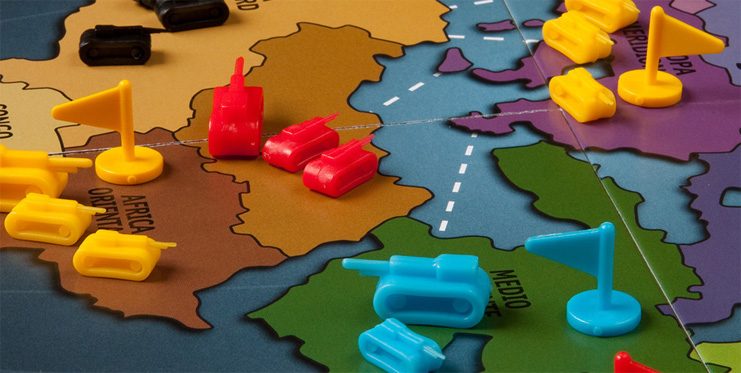

Riziko
U igri mogu uzeti učešće 2 do 6 igrača.
Komplet sadrži figurice u obliku "Tenkova",u 6 različitih boja.Takođe,tu moraju biti i po 3 bele i 3 tamne Igraće Kockice.Bele baca igrač koji napada,a tamne,onaj koji se brani. Tabla je u stvari "Karta Sveta",sa 6 Kontinenata.Na svakom od njih,postoje po 4,do 12 Država.Da bi zaposeo Kontinent,igrač ih mora osvojiti sve.Dok drži Kontinent u posedu,igrač dobija dodatne nagrade.
Komplet sadrži i 10-ak "Kartica", na kojima su ispisani najrazličitiji Zadaci, npr: "Osvojiti Evropu i još jedan Kontinent po sopstvenom izboru". Pored ovih,još postoje 42 "Kartice" sa ispisanim nazivima Država,kojih ukupno na Tabli ima isto toliko.Pored naziva Države,svaka na sebi ima i ucrtan po jedan simbol: tenk,avion,ili pešadinca. Postoje još 2 "Džoker-kartice",koje se na početku partije drže po strani.
Početak igre
Igrači biraju boje svojih armija.Mešaju se Karte sa Zadatcima i svako izvlači po jednu,tako da je vidi samo on. Ostatak ove vrste kartica se odlažu na stranu i više u toj partiji ne učestvuju. Svi dobijaju "Tenkove" odabranih boja,a njihov broj zavisi,od broja učesnika u igri.
- 3 igrača - po 35 Tenkova
- 4 igrača - po 30 Tenkova
- 5 igrača - po 25 Tenkova
- 6 igrača - po 20 tenkova
Igrači zatim redom vuku,jednu po jednu Karticu sa nazivima Država.Kako ko izvuče koju Državu,tako je zauzima sa jednom svojom figurom.Ove kartice se vuku do poslednje, odnosno,sve Države sa Mape se moraju razdeliti između učesnika.
Posle rasporeda Teritorija,igrači (u zavisnosti od svojih zadataka) postavljaju i ostale svoje Tenkove,svako na svoja zaposednuta polja.Sve figure se moraju rasporediti na Tabli,a na jednoj Državi ih se može naći neograničeno. Kartice sa imenima Država se ponovo mešaju,a njima se sada pridodaju i 2 Džokera. Takav špil od 44 karte se postavlja na sredinu stola,licem na dole.Odatle ih igrači tokom igre ponovo vuku,ali sada sa drugačijim ciljem.
Tok igre
Na svakom svom potezu,igrač najpre izvrši pojačanja.Tačnije,on dodaje određeni broj Tenkova na neku svoju teritoriju,ali to nisu one figurice,podeljene igračima na početku partije,već iz ostatka,pošto ih od svake boje u kompletu ima oko 100-ak.Posle toga se vrši napad na neku protivničku teritoriju.Napadati se može samo susedna Država,ili preko mora, ako je teritorija koja se napada,spojena isprekidanim linijama sa onom,odakle se izvodi napad.
"Napad" i "Odbrana" se vrše bacanjem Kockica.
Pojačanja
Pred svaki napad,igrač može izvesti sledeća pojačanja:
- Broj Teritorija koje drži u svom posedu,podeljeno sa 3 i zaokruženo na prvu manju vrednost.Npr,ako u datom momentu igrač drži u svom posedu 10 država,onda je 10:3=3,33.To znači da on uzima 3 Tenka iz Rezerve i raspoređuje ih na svoje Teritorije.
- Ako igrač u datom trenutku drži ceo Kontinent,za njega dobija i dodatna pojačanja. Za Australiju,ili Južnu Ameriku,dobija 2 Tenka,za Afriku 3 Tenka,za Evropu,ili Severnu Ameriku,dobijaju se 5 novih tenkova iz rezerve,a za Aziju,7 Tenkova pojačanja.U sučaju da određeni Kontinent se poseduje nekoliko krugova,u svakom se dobijaju i ova pojačanja.Uvek se posmatra trenutak pred Napad,ne vezano za predhodne situacije u igri.
- Ako igrač u svom potezu osvoji bar jednu novu Državu,on završava potez tako,što vuče jednu Karticu.Kada na ovaj način kompletira 3 određena Simbola na njima,on ih u svom sledećem potezu vraća na dno Hrpe,a za uzvrat uzima pojačanja i to:
- 3 Tenka (na Karticama) -4 Tenka (figure) pojačanja
- 3 Pešaka " 6 Tenkova pojačanja
- 3 Aviona " 8 Tenkova pojačanja
- 3 različita Sibola na Karticama " 10 Tenkova pojačanja
- 2 ista Simbola i jednog Džokera " 12 Tenkova
Ako se na Karticama koje vraća,slučajno nađe i ime Države koju sam poseduje,za nju dobija još 2 dodatna Tenka.
Pregrupisavanje snaga
Pored pojačanja,pred sam Napad,igrač još može sa jedne svoje Teritorije,jedan broj Tenkova, prebaciti na drugu.One ne moraju biti granične,a jedini uslov je,da na prvoj mora ostati bar jedna figurica. Tokom čitave igre,ni jedna Tertorija ne sme ostati bez figure na sebi.
Napad
Igrač objavljuje koju Državu napada i sa koje svoje Teritorije.Još jendom da napomenemo,to moraju biti zemlje,koje se graniče,ili su preko Mora spojene isprekidanim crticama.
Da bi izveo Napad,igrač mora na Teritoriji sa koje napada,imati najmanje 2 Tenka.U tom slučaju,napadao bi samo sa jednom Kockicom.Ako na toj teritoriji ima 3 Tenka,može napadati sa jednom,ili dve Kockice.Ako pak,na toj teritoriji postoje 4,ili više Tenkova,Napad se može izvesti sa jednom,dve,ili tri Kockice.Za Napad se koriste "Bele" Kockice.
Igrač Odbrane se brani samo sa jednom Kockicom,ako na tom polju ima jedan Tenk.Sa jednom,ili dve,ako poseduje 2 Tenka.Sa jednom,dve,ili tri,ako na toj teritoriji ima 3, ili više Tenkova.Odluku o njihovom broju donosi branilac,a ona ne zavisi od toga,sa koliko ga Tenkova protivnik napada.Za Odbranu se koriste "Tamne" Kockice.
Što se više Kockica koriste za Napad i Odbranu,to su veće šanse za uspeh.
Rezultat bacanja
Ako oba igrača bacaju po 3 Kockice,najjač vrednost se upoređuje sa najjačom protivničkom,srednja vrednost,sa srednjom protivničkom,a najslabija,sa najslabijom.U sučaju da Odbrambeni igrač baca samo jednu Kockicu,njena vrednost se upoređuje sa najjačom protivničkom.Očigledne su znatno uvećane šanse Napadača,ako napada sa većim brojem Kockica,od broja,sa kojima se protivnik brani,a važi i obrnuto.međutim,sa svakom bačenom Kockicom,postoji i mogućnost gubitka jednog Tenka.
Npr,Napadač baci:6,5,2 ,a Odbrambeni igrač:5,4,3. Šestica je jača od Odbrambene Petice,a Petica napadača,od Četvorke odbrane.Na taj način,Odbrana gubi 2 Tenka.Kako je u poređenju trećih Kockica ,odbrambena Trojka,jača od protivničke Dvojke,napadač takođe gubi jedan Tenk.
U drugom primeru,Napadač baca: 6,4,1,a Odbrana:5,5 (samo 2 Kockice).Šestica je jača od Petice,ali je druga Kockica napada Četovrka,slabija od druge Petice Odbrane.Tako obe strane gube po jedan Tenk.Najslabija Kockica Napadača se i ne računa,pošto je Odbrana igrala samo sa dve.
Ako se sa napadnute teritorije uklone svi Tenkovi branioca,ona je osvojena.On odmah mora sa teritorije napada,na nju prebaciti bar jedan svoj Tenk.Po želji,on ih može prebaciti i više,ali je uslov,da teritoriji sa koje se napadalo,ostane bar jedan.
Uništeni Tenkovi u toku "borbe",vraćaju se u Rezervu.
Završetak poteza
Igrač može posle bilo kog svog bacanja prekinuti potez,ali isto tako,može i nastaviti sa napadima,dokle god to želi.U toku jednog poteza,igrač može ponavljati istovetne napade,odnosno,napadati iz jedne,pa iz druge svoje Države.Takođe,može napasti jednu,pa zatim potpuno drugu Teritoriju,koja pripada nekom drugom protivniku.
Ako igrač tokom svog poteza osvoji bar jednu Teritoriju,završava ga po sopstvenoj želji,ali tako,što vuče jednu Karticu sa Simbolom.On Simbole sparuje sa onima,koje eventualno već ima,odnosno čuva je za kasnije,kada u sledećim potezima bude vukao druge Kartice.Da podsetimo,spareni Simboli mu pred neki od sledećih poteza,donose dodatna pojačanja.
Završetak partije
Kada igrač ispuni,samo njemu znan zadatak,on to i objavljuje.Tek tada otkriva Karticu sa početka partije kao dokaz,da je ispunio upravo ono,što je od njega i zahtevano.Do tog momenta,svakome je bio poznat samo sopstveni zadatak.